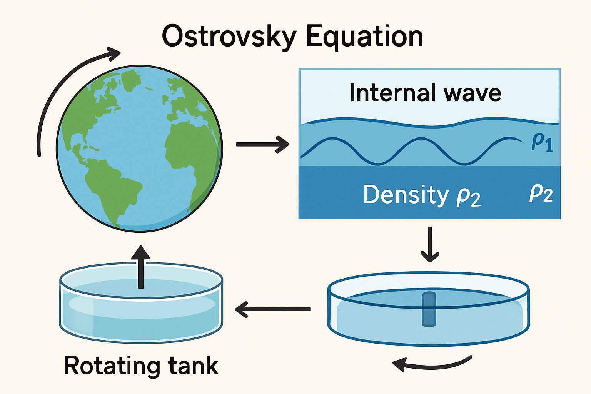

第2章：Ostrovsky 方程介绍
在回顾了偏微分方程和傅里叶分析的基础知识后，我们现在将注意力转向本教程的核心——Ostrovsky 方程。本章将详细介绍该方程的由来、物理背景、数学形式及其在非线性波研究领域的重要性。
2.1 Ostrovsky 方程的背景与物理意义
Ostrovsky 方程是一个描述在旋转参考系中弱非线性、长波传播的偏微分方程。它在海洋学、大气科学以及等离子体物理等领域都有重要的应用前景。
2.1.1 方程的提出与发展
Ostrovsky 方程最初由 L. A. Ostrovsky 于1978年提出，旨在研究旋转效应对孤立波（如KdV方程描述的孤子）的影响。经典的KdV方程描述的是在无旋转、浅水环境下表面波或内部波的传播。然而，在许多实际的地球物理流体中，如海洋和大气，地球的自转（科里奥利效应）扮演着不可忽视的角色。Ostrovsky 发现，当考虑这种旋转效应时，长波的动力学行为会发生显著改变。
该方程的推导通常基于弱非线性、弱色散以及慢旋转的假设。它是在KdV方程的基础上引入了一个与旋转相关的积分项，这个积分项从根本上改变了波的色散特性，并对孤立波的稳定性和传播行为产生了深远影响。后续的研究进一步发展了Ostrovsky方程的理论，探讨了其解的性质、守恒律以及在不同物理情境下的适用性。
2.1.2 在哪些物理现象中出现？（例如：内部波、旋转流体）
Ostrovsky 方程主要用于描述以下几类物理现象中的波动行为：
- 海洋内部波 (Oceanic Internal Waves)：海洋通常是密度分层的，在不同密度层之间可以传播内部波。地球的自转对这些大尺度内部波的传播有显著影响。Ostrovsky 方程提供了一个模型来研究这些受旋转影响的内部孤立波或长波包的演化。这些内部波对海洋混合、营养物质输运以及声学传播都有重要作用。
- 旋转流体中的波动 (Waves in Rotating Fluids)：在实验室环境或行星大气中，当流体在一个旋转的参考系中运动时，会出现各种受科里奥利力影响的波动现象。例如，在浅水模型中考虑旋转效应时，Ostrovsky 方程可以描述某些类型的惯性重力波或Poincaré波的弱非线性行为。
- 等离子体物理 (Plasma Physics)：在某些特定配置的磁化等离子体中，低频波动的行为也可能受到类似于旋转效应的影响，此时Ostrovsky方程或其变种也可能适用。
总的来说，Ostrovsky 方程适用于那些长波近似成立、非线性效应和色散效应同等重要，并且系统存在一个主导的旋转或类似效应（如某些等离子体中的磁场效应）的物理系统。
2.1.3 插图规划：Ostrovsky 方程相关物理现象概念图

插图4: Ostrovsky 方程相关物理现象概念图。一个组合示意图，可以包含地球自转与海洋内波模型、旋转水槽实验示意，并说明与Ostrovsky方程的关联。
2.2 Ostrovsky 方程的数学形式
理解了Ostrovsky方程的物理背景后，我们来看其具体的数学表达。
2.2.1 标准形式及其各项的含义
Ostrovsky 方程通常写作如下形式：
其中：
- u = u(x, t) 是波的振幅或某个物理量（例如，流体界面的位移或速度）随空间 x 和时间 t 的变化。
- 下标 _t 和 _x 分别表示对时间和空间的偏导数，例如 ut = ∂u/∂t，uxxx = ∂³u/∂x³。
- c0 是线性长波的相速度，通常可以通过其他参数（如流体深度、密度差等）确定。
- α 是非线性系数，衡量非线性效应的强度。非线性项 α u ux 导致波形变陡。
- β 是色散系数，衡量短波色散效应的强度。色散项 β uxxx （类似于KdV方程中的色散项）使得不同波长的波以不同速度传播，从而使波包弥散。
- γ 是与旋转效应（或类似效应）相关的系数。这一项是Ostrovsky方程区别于KdV等方程的关键。γ u 项的出现，特别是它在整个方程被对 x 求导的括号内部，引入了一种非局域的效应，极大地改变了方程的色散特性。
各项的物理意义：
- ut：时间演化项，描述波形随时间的变化率。
- c0 ux：线性平流项，描述波形以速度 c0 沿 x 方向平移。
- α u ux：非线性项，导致波速依赖于振幅，大振幅部分传播更快，易形成激波（若无色散）。
- β uxxx：KdV型色散项，引入高阶色散，平衡非线性陡峭效应，使得孤立波等稳定波形的存在成为可能。
- ( ... )x = γ u：这一结构表明，γ u 是某个量对 x 的导数。这个 γ u 项通常来源于科里奥利力在特定近似下的作用，它引入了非常长波的色散，并可能阻止真正意义上的孤立子（在无穷远处衰减为零的定常行波解）的存在，除非在特定条件下。
有时，通过积分并假设在无穷远处 u 和其导数趋于零，方程可以写成积分-微分形式，或者在研究行波解时进行简化。
2.2.2 与KdV等其他波动方程的联系与区别
Ostrovsky 方程与一些著名的非线性波动方程有密切联系，但也有其独特性：
- 与 Korteweg-de Vries (KdV) 方程的联系：
KdV 方程：ut + α u ux + β uxxx = 0如果令 Ostrovsky 方程中的旋转参数 γ = 0，并且对方程 (ut + c0 ux + α u ux + β uxxx)x = 0 关于 x 进行一次积分（并假设积分常数为零，这对应于在无穷远处扰动消失的情况），我们就可以得到（或经过变量代换后得到）KdV方程。因此，KdV方程可以看作是Ostrovsky方程在无旋转极限下的特例。KdV方程以其孤子解而闻名。 - 与 Benjamin-Ono (BO) 方程的联系：
BO 方程：ut + u ux + H(uxx) = 0(H 为希尔伯特变换)
BO方程描述的是深水内部波，其色散项是非局域的希尔伯特变换。Ostrovsky方程中的旋转项 γ u 在经过傅里叶变换后，也会引入与波数相关的因子，从而产生与BO方程类似的非局域色散效应，但具体形式不同。 - 与 Whitham 方程的联系：
Whitham 方程是一类更广义的方程，它可以包含任意形式的线性色散关系，并结合非线性项。Ostrovsky 方程可以看作是Whitham类型方程的一个具体例子，其线性色散关系由 β 和 γ 项共同决定。
主要区别：
- 旋转/非局域效应：Ostrovsky 方程中的 γ u 项是其最显著的特征。这一项引入了由于旋转（或类似物理机制）导致的非常长波的色散。这种色散与KdV方程中的短波色散 (β uxxx) 有本质不同。
- 孤立波的存在性：KdV方程以其稳定的孤子解而著称。然而，在Ostrovsky方程中，由于 γ 项的存在，标准的（在无穷远处衰减为零的）孤立子解通常不存在。取而代之的是所谓的“代数孤子”（衰减较慢）或者周期波解，或者在特定条件下可能存在辐射阻尼的准孤子。旋转效应倾向于将能量辐射到长波中，从而阻止了KdV型孤子的形成。
- 色散关系：正如我们将在下一章详细分析的，Ostrovsky方程的线性色散关系 ω(k) 由于 γ 项的存在而变得更为复杂。它通常在 k → 0 （长波极限）时表现出与KdV方程不同的行为，这直接影响了波的传播特性。
理解这些联系与区别有助于我们将Ostrovsky方程置于更广阔的非线性波动理论框架中，并认识到其独特性和研究价值。
2.2.3 插图规划：Ostrovsky 方程数学结构示意图
插图5: Ostrovsky 方程数学结构示意图。清晰展示方程形式，并用不同颜色或框图标注各组成部分及其物理作用，强调旋转项的特殊性。